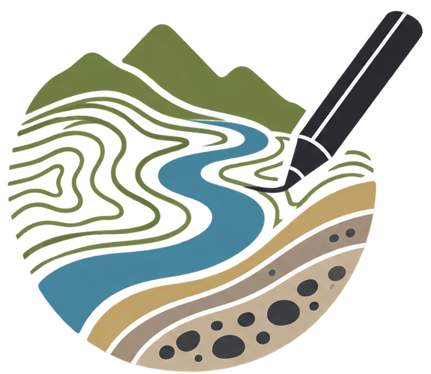
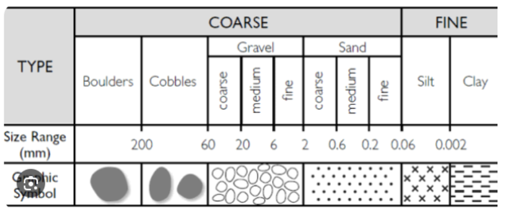

Mis proyectos
Cada proyecto mantiene sus propios mapas, campañas, fotografías y cartografía.

Del terreno al mapa
¿No tienes cuenta?
Cada proyecto mantiene sus propios mapas, campañas, fotografías y cartografía.
Preferencias de campo, unidades, GNSS, almacenamiento y sincronización.
Sin cuenta vinculada
Los proyectos se guardan en este dispositivo
Se sincronizan también los metadatos de fotografías y mapas, pero los archivos binarios de fotos y GeoTIFF permanecen locales; su subida al Storage se añadirá aparte.
La combinació conserva els MDT originals. A cada solapament, el MDT de més resolució té prioritat i el MDT gran queda retallat en aquella zona. Perfils, seccions i 3D consulten la mateixa superfície combinada.
#6B5D82En guardar, GeoCauce pre-renderitza tots els píxels en teseles. Després el mapa només carrega la imatge ja preparada; el GeoTIFF original queda intacte per als càlculs.
| Nom torrent: | — | Nom tram: | — |
|---|---|---|---|
| Nom secció: | Data visita: | ||
| Fotografia: | ↑ (riu amunt) ↓ (riu avall) | ||
Escriu directament a les caselles amb l’S Pen. Amb un dit pots desplaçar la fitxa; amb dos dits pots ampliar-la o reduir-la.
Codis certesa: A = observació directa / mesura; B = estimació raonable; C = interpretació / estimada / assumit; D = incert; X = no possible.

Esta paleta es global: los cambios quedan disponibles en todos los proyectos de GeoCauce.
Selecciona una o varias páginas de la libreta.
Què vols fer amb aquest nou traç?
Què vols fer amb aquest nou traç?
Per redefinir un interval complet, usa l’eina Trams i marca un nou inici i final. El nou tram tindrà prioritat sobre els trams existents i els solapaments es retallaran.
| Tram | Coordenades XY ETRS89 UTM 31N | Longitud (m) | Cota mín (m) | Cota màx (m) | Pendent MDE | Pendent camp | Motiu canvi tram | ||
|---|---|---|---|---|---|---|---|---|---|
| inicial | final | Codi | Observacions | ||||||
Cada tram apareix etiquetat al centre entre els seus límits. Amb Perfil pots corregir la línia del MDE amb l’S Pen; amb Trams toca inici i final directament sobre el perfil per definir-los; amb Llapis pots fer anotacions. Els fragments desconnectats mantenen el buit no cartografiat.
| Nom torrent: | Observador: | ||
|---|---|---|---|
| Nom tram: | Data visita: | ||
| Nombre de seccions: | S1 (inicial), S2 (final), S3 (addicional) | Fotografia: | ↑ (riu amunt) ↓ (riu avall) |
| Pendent mitjà MDE (º) | ||
|---|---|---|
| Pendent a camp (º) | ||
| Litologia/Material | ||
| Tipus perfil | ||
| Vegetació | Cobertura vegetal | |
| Tipus dominant | ||
| Elements antròpics | ||
Motiu de canvi de tram: P = pendent; L = litologia; C = confinament; M = morfologia/material; V = vegetació sí/no; A = afluent; O = obra; X = altres.
Tipus perfil: homogeni, esglaó i piscina.
Coberta vegetal: 0 = sòl nu; 1 = <25 %; 2 = 25–50 %; 3 = 50–75 %; 4 = >75 %.
Tipus vegetació: herbàcia; arbustiva; arbòria; mixta.
Material/substrat: roca; sediment consolidat; sediment no consolidat.
Evidència erosió: erosió de fons; erosió lateral; socavació local; incisió; retrocés de marge. Intensitat: no visible; molt poc; poc; molt.
Evidència acumulació en superfície: origen pendent de definir (arrossegament superficial, paret…).
Gruix de sediment: categories pendents de definir.
Forma sediment predominant: canto; bretxa; bloc.
Matriu: absent; escassa; moderada; abundant.
Certesa: A = observació directa / mesura; B = estimació raonable; C = interpretació / estimada / assumit; D = incert; X = no possible.
Cada FITXA I enquadra automàticament el torrent actiu. El mapa general és un fitxer separat: la seva extensió la defineixen els mapes del projecte i mostra els cursos amb els seus noms, sense divisions de trams.
La parada queda guardada com a punt del mapa. Els punts fotogràfics vinculats es conserven encara que eliminis la parada.